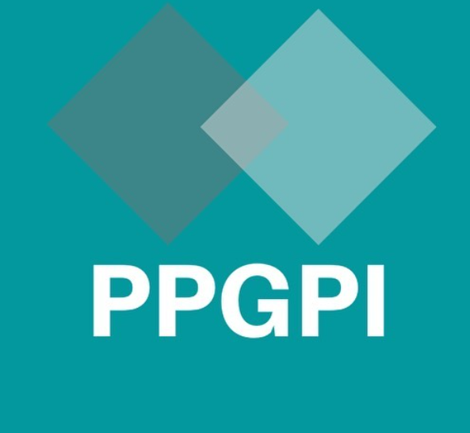

<!-- ===== RODAPÉ ===== -->
<footer class="foot">
  <div class="logos">
    <!-- Logo do CCHLA -->
    <a href="https://cchla.ufrn.br" target="_blank" rel="noopener">
      
    </a>

    <!-- Logo do PPGPI -->
    <a href="https://sigaa.ufrn.br/sigaa/public/programa/portal.jsf?id=10094" target="_blank" rel="noopener">
      
    </a>
  </div>

  <!-- Texto institucional no final -->
  <div class="footer-text">
    <p>
      A cada evento, um novo capítulo da nossa história musical.<br>
      Acompanhe a programação e fortaleça a cultura que pulsa na Escola de Música da UFRN.<br>
      Sua presença faz toda a diferença.<br>
      <strong>Agenda Cultural UFRN:</strong> tradição, talento e música ao seu alcance.
    </p>
  </div>

  © <span id="year"></span> Grupo Som Aberto - PPGPI
</footer>
